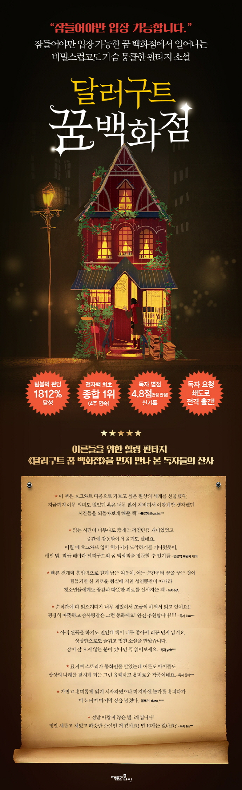

Lee Mi-ye's full-length novel. A unique village where you can enter only when you fall asleep. The most popular place for sleeping guests who enter the place is the "Dollar Good's Dream Department Store," which brings together all kinds of dreams and sells them. Not only do long sleepers, but also people who take short naps and animals make a great success every day. The owner of an extraordinary lineage, Dollargut, and a new employee who works for his closest ally.
